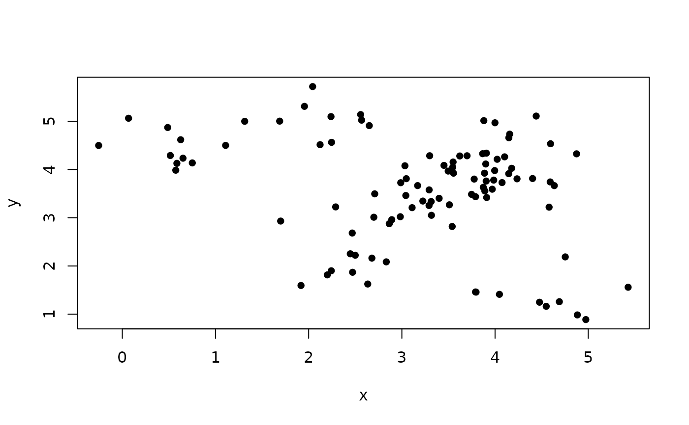
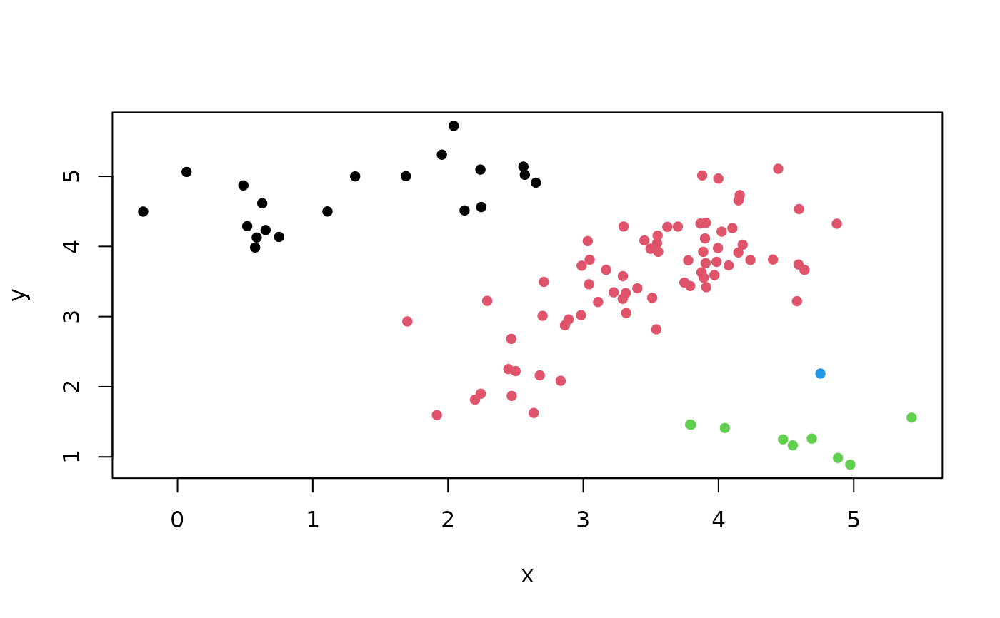
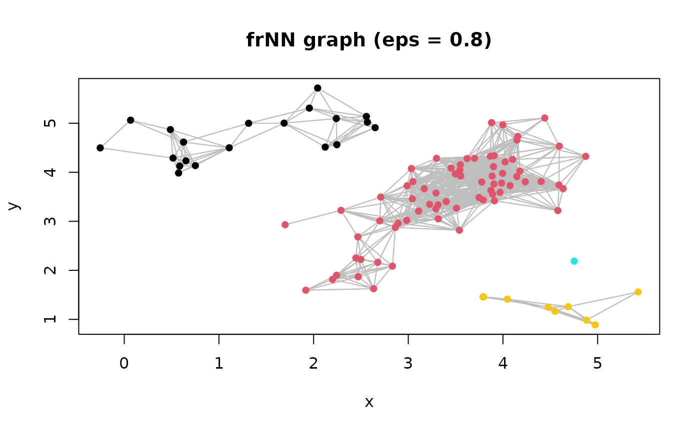
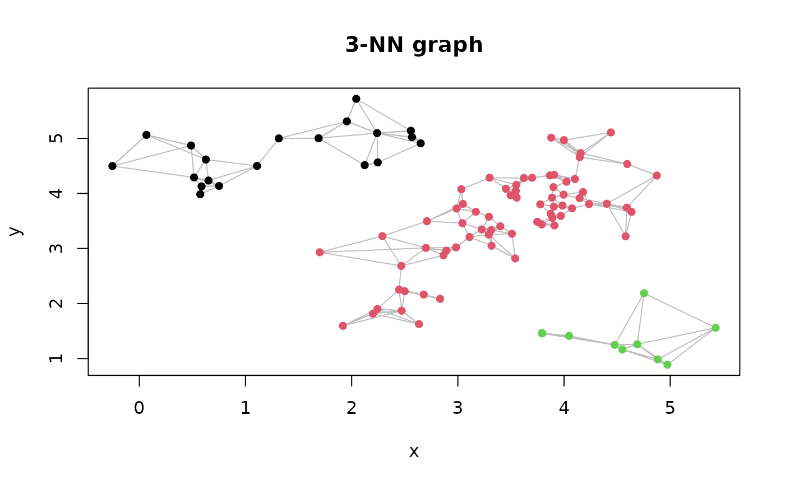
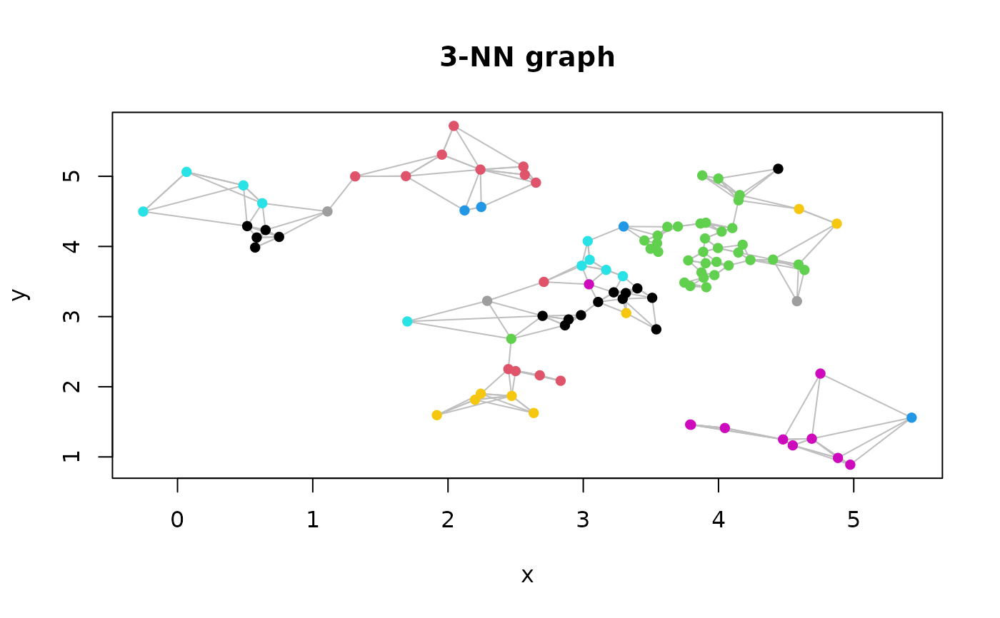
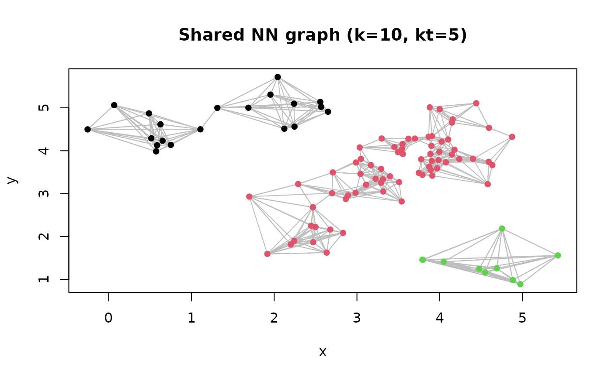

Generic function and methods to find connected components in nearest neighbor graphs.
Usage
comps(x, ...)
# S3 method for class 'dist'
comps(x, eps, ...)
# S3 method for class 'kNN'
comps(x, mutual = FALSE, ...)
# S3 method for class 'sNN'
comps(x, ...)
# S3 method for class 'frNN'
comps(x, ...)Details
Note that for kNN graphs, one point may be in the kNN of the other but nor vice versa.
mutual = TRUE requires that both points are in each other's kNN.
Examples
set.seed(665544)
n <- 100
x <- cbind(
x=runif(10, 0, 5) + rnorm(n, sd = 0.4),
y=runif(10, 0, 5) + rnorm(n, sd = 0.4)
)
plot(x, pch = 16)

# Connected components on a graph where each pair of points
# with a distance less or equal to eps are connected
d <- dist(x)
components <- comps(d, eps = .8)
plot(x, col = components, pch = 16)

# Connected components in a fixed radius nearest neighbor graph
# Gives the same result as the threshold on the distances above
frnn <- frNN(x, eps = .8)
components <- comps(frnn)
plot(frnn, data = x, col = components)

# Connected components on a k nearest neighbors graph
knn <- kNN(x, 3)
components <- comps(knn, mutual = FALSE)
plot(knn, data = x, col = components)

components <- comps(knn, mutual = TRUE)
plot(knn, data = x, col = components)

# Connected components in a shared nearest neighbor graph
snn <- sNN(x, k = 10, kt = 5)
components <- comps(snn)
plot(snn, data = x, col = components)
